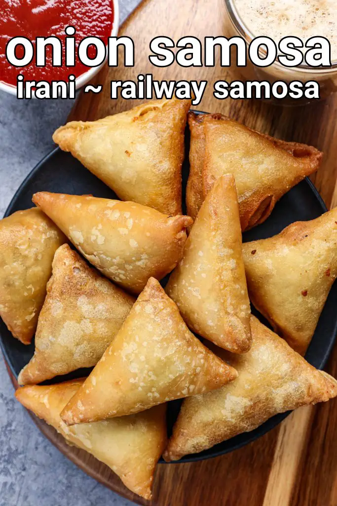

Samosa
Samosa is a potato stuffed deep fried snack very popular in India, Middle East & Asian countries. They originated from the middle east and was brought to India by the Merchants.
We have to check the ingredients first :-
- 2 cup maida
- 2 tbsp corn flour
- ½ tsp salt
- 2 cup water
for stuffing:
- 2 onion (sliced)
- ▢1 cup poha / avalakki / flattened rice (thin)
- 1 chilli (finely chopped)
- 1 tsp chilli powder
- ½ tsp cumin powder
- 1 tsp chaat masala
- ¾ tsp salt
- 2 tbsp coriander (finely chopped)
other ingredients:
- maida paste
- oil (for frying)

Now how to make samosa
INSTRUCTIONS
- firstly, in a large bowl take 2 cup maida, 2 tbsp corn flour and ½ tsp salt.
- add 2 to 2½ cup water and mix well using a whisk.
- whisk until a smooth lump-free batter is formed adding water as required.
- now grease the pan and pour a ladleful of batter on a hot pan.
- swirl once making sure the batter is uniformly spread.
- cook for a minute or until the sheet is cooked without browning.
- now flip over gently and continue to cook.
- finally, the samosa sheet is ready. you can cover and use it to prepare patti samosa or spring rolls.
how to make onion stuffing:
- firstly, in a large bowl take 2 onion, 1 cup poha, 1 chilli and 1 tsp chilli powder.
- also add ½ tsp cumin powder, 1 tsp chaat masala, ¾ tsp salt and 2 tbsp coriander.
- mix well by squeezing onions.
- onion stuffing is ready.
how to fold irani samosa:
- firstly, take the prepared samosa sheet and cut in half.
- fold into triangle sticking using maida.
- stuff the onion stuffing. make sure to stuff well else the samosa will be bland.
- seal the samosa using maida paste.
- deep fry the samosa in hot oil keeping the flame on low.
- stir occasionally, frying in between making sure to brown uniformly.
- it will take approximately 15-20 minutes to get crispy golden coloured samosa.
- drain off the samosa and enjoy irani samosa with tomato sauce.
Back to home page